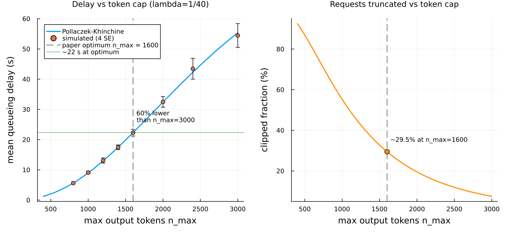
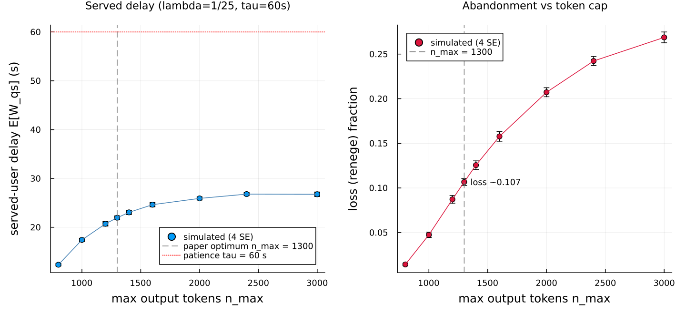
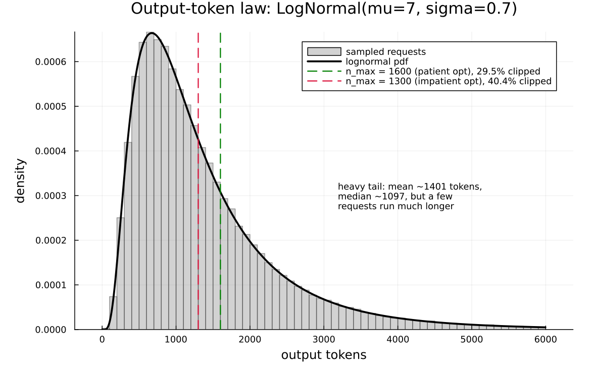

An M/G/1 model of an LLM inference server
This page walks through examples/yang2024_llm_mg1.jl: a single-GPU large-language-model inference server, modeled as an M/G/1 queue with a per-request mark, checked against the exact Pollaczek–Khinchine theory, and used to reproduce the headline numbers of Yang, Jiao & Xu, "A Queueing Theoretic Perspective on Low-Latency LLM Inference with Variable Token Length" (WiOpt 2024, arXiv:2407.05347, arxiv.org/abs/2407.05347).
The paper's Sections IV–V on GPU batching (bulk-service and elastic batching) are out of scope; this example reproduces only the single-server M/G/1 model of Sections II–III: max-token clipping, the impatient-user reneging variant, and the queueing-delay figures.
What the server does
An LLM answers a request by generating output tokens one at a time. Each new token is a fresh forward pass through the model, so a reply that runs to 2000 tokens costs roughly ten times as long to produce as one that stops at 200. The completion time of a request is therefore affine in its output length:
S = a · n + c (a in seconds/token, c in seconds),where n is the number of output tokens the request ends up generating. Input length barely matters — the paper measures its effect on latency as negligible (about 8% over a 64→512 input range, versus 8× over a 128→1024 output range) — so the model ignores it and keeps only the output count.
The catch is that output length is unpredictable and heavy-tailed. The paper models it as a lognormal law with log-mean μ = 7 and log-std σ = 0.7 (natural log): a median around 1097 tokens, a mean around 1401, but a long right tail of occasional very long completions. In a first-come first-served single-GPU server, those rare long answers are exactly what inflates everyone else's waiting time: the Pollaczek–Khinchine formula makes mean queueing delay proportional to E[S²], the second moment of service, which a heavy tail dominates.
The intervention the paper studies is max-token clipping: cap every request at n_max output tokens, so n = min(N, n_max). This shears the right tail of the service law, collapses E[S²], and sharply cuts mean queueing delay — at the cost of truncating a fraction of answers (the "clipped fraction"). Smaller n_max means lower delay but more answers cut short. A second variant adds impatient users who abandon the queue if they have waited longer than a fixed patience τ; there, clipping shows up as a reduced loss fraction rather than reduced delay.
Why this is an M/G/1 queue with a mark
Every request carries its own output length, drawn when it arrives and read by the service law when it reaches the GPU. That is exactly what a mark is in Concourse: a per-job attribute sampled at the source and consumed downstream. The arrival stream is Poisson (the "M"), the service law is general (the "G" — an affine function of a lognormal count), and there is one server (the "1"). The token count is the mark; the affine law turns it into a service time.
The Concourse model
The source stamps every request with its output-token count as a chained mark. The first draw is the raw lognormal length; the second is a deterministic (Dirac) mark that rounds up and clips it. There is no Truncated law in the surface algebra — its logccdf produces NaN ForwardDiff partials — so clipping is done with min/ceil on the drawn value. That is censoring, not renormalized truncation, which is exactly the paper's rule n = min(N, n_max): the request count is unchanged, long requests are shortened rather than dropped.
mk = MarkLaw(
raw = Law(:LogNormal, meanlog = Const(MU), sdlog = Const(SIGMA)),
n = Law(:Dirac, value = min(ceil(Mark(:raw)), Const(float(n_max)))))
source!(net, :arrive;
interarrival = Law(:Exponential, scale = inv(Param(:lambda))),
mark = mk)
service = Law(:Dirac, value = Const(A) * Mark(:n) + Const(C))The GPU is a single FCFS server whose service law is the Dirac above — deterministic given the mark n, but random across requests because n is. The impatient variant adds a deterministic patience clock and routes an abandoning job to a loss sink:
if patient
station!(net, :gpu; discipline = FCFS(), servers = 1, service = service)
else
station!(net, :gpu; discipline = FCFS(), servers = 1, service = service,
patience = Law(:Dirac, value = Const(τ)), renege_to = :lost)
sink!(net, :lost)
endA completed request fires :service at its departure; an abandoning request fires :patience at arrival + τ and never reaches service. Because the service law is deterministic in the mark, the per-request queueing delay can be read straight off the record as sojourn minus the known service time:
W = (departure − arrival) − (a·n + c).This is the Pollaczek–Khinchine waiting-in-queue time — time from arrival until service begins — not the sojourn. The paper's reported "23 s" is queueing delay, so service time is not added to it.
The calibrated service line
The constants are
a = 0.0225 s/token, c = 0.These are calibrated, not published. The paper never prints its fitted service-line slope or intercept (Sec. III.A, Eq. 4); they appear only as a line in Fig. 2a, fit on an A100 with LLaMA-2-7b-chat. We chose a = 0.0225 s/token, c = 0 to reproduce the paper's headline Fig. 4 numbers for LLaMA-2-7b-chat: mean queueing delay about 23 s at the reported optimum n_max = 1600 and about 56 s at n_max = 3000, at λ = 1/40. A least-squares fit to the paper's Table I latency measurements independently gives a ≈ 0.023, c ≈ 0, consistent with this. The other quantities (μ, σ, λ, τ) are taken verbatim from the paper's Sec. V.B.
The Pollaczek–Khinchine oracle
For this model the mean queueing delay is exact in closed form, and the example computes it directly to validate the simulation. Output length is discretized to integers n ≥ 1 with the pmf that matches ceil of the lognormal draw,
p_n = Φ((ln n − μ)/σ) − Φ((ln(n−1) − μ)/σ),and clipping piles all mass above n_max onto the atom at n_max (censoring, the paper's Eqs. 2–3):
function clipped_token_moments(n_max)
m1 = 0.0; m2 = 0.0; cum = 0.0
for k in 1:(n_max - 1)
p = pmf(k)
m1 += k * p; m2 += k * k * p; cum += p
end
tail = 1 - cum # P(ceil(N) >= n_max), piled onto n_max
(m1 + n_max * tail, m2 + n_max * n_max * tail)
endThe affine law maps the token moments to service moments (Var(S) = a²·Var(n), the paper's Eqs. 4–5), and Pollaczek–Khinchine gives the delay (Eq. 1):
function service_moments(n_max)
m1, m2 = clipped_token_moments(n_max)
ES = A * m1 + C
ES2 = ES^2 + A^2 * (m2 - m1^2) # Var(S) = a^2 Var(n), plus E[S]^2
(ES, ES2)
end
function pk_delay(n_max, λ)
ES, ES2 = service_moments(n_max)
ρ = λ * ES
ρ >= 1 && return NaN # unstable: plain M/G/1 has no finite W
λ * ES2 / (2 * (1 - ρ))
endValidation: the simulation against the oracle
Twenty-four replications of 200 000 simulated seconds each (about 5000 arrivals per replicate, a 5000-second warm-up discarded). At every token cap the simulated mean queueing delay agrees with the exact P–K oracle within the repository's four-standard-error convention:
patient M/G/1, lambda = 1/40, a = 0.0225, c = 0.0
n_max simulated W (s) P-K oracle (s) rho |z|
800 5.61 ± 0.05 5.65 0.402 0.84
1000 9.0 ± 0.08 9.01 0.471 0.21
1600 22.24 ± 0.27 22.34 0.609 0.38
2400 42.1 ± 0.7 42.31 0.7 0.29
3000 55.39 ± 1.11 55.37 0.734 0.02All five points pass at 4 SE (largest |z| = 0.84). The simulated per-request queueing delay, read from the replayed record, matches the exact P–K delay for the clipped lognormal across the whole sweep.
Experiment 1: delay and clipping vs the token cap (patient users)

The left panel is the P–K delay curve (with simulated points and 4-SE bars) against n_max at λ = 1/40; the right panel is the fraction of requests truncated. Raising the cap from 1600 to 3000 tokens lets the tail back in and roughly doubles the mean queueing delay: the oracle gives 22.34 s at n_max = 1600 and 55.37 s at n_max = 3000, a 59.65% reduction (the paper reports 58.93% — within figure-reading tolerance). The right panel shows the price: at n_max = 1600, 29.5% of requests are clipped (equivalently 70.53% run to completion unclipped), matching the paper's "70.53% have an output token size less than 1600."
An honest caveat. The P–K delay curve is monotone increasing in n_max: a bigger cap always means more delay, so n_max = 1600 is not a delay minimum. It is the paper's optimum under the utility objective V₁ = θ·E[u] − (1−θ)·E[W], which trades answer quality against delay; that objective, not the delay curve, has an interior maximum near 1600. The figure therefore plots the (monotone) delay curve and marks 1600 as the paper's reported optimum, annotated with the 23 s / 59.65% headline, which is the delay-based fact being reproduced.
Experiment 2: impatient users who abandon

At the heavier load λ = 1/25, plain M/G/1 is unstable for large n_max (ρ > 1) — the unclipped mean service already exceeds the interarrival time. Reneging is what keeps the system stable: users abandon after waiting τ = 60 s, which sheds load. This variant is simulated directly (an abandonment is scheduled at arrival + τ; if service has not started by then the customer leaves and is counted lost). There is no analytic overlay: the paper's De Kok–Tijms interpolation for M/G/1 + reneging relies on deterministic/exponential subcase formulas it never prints, so this is where the simulation goes beyond the paper.
The left panel is served-user delay E[W_qs]; the right panel is the loss (renege) fraction. At the paper's impatient optimum n_max = 1300 the simulation gives loss ≈ 0.107 (paper target ≈ 0.12) and served delay about 22 s. Pushing the cap to 3000 raises the loss to 0.269 (paper implied ≈ 0.275), a 60.31% increase in abandonment relative to the optimum — the paper reports 56.36%. Served-user delay rises and then saturates near 27 s: abandonment caps how long anyone actually waits at τ, reproducing the qualitative shape of the paper's Fig. 4b.
Experiment 3: the heavy tail that makes clipping work

This is the whole mechanism in one picture: the LogNormal(7, 0.7) density over a sampled histogram, with the two clip points marked. The mean is about 1401 tokens and the median about 1097, but the distribution has a long right tail — a few requests run to several thousand tokens. Only a small mass sits past n_max = 1600 (29.5%) or n_max = 1300 (40.4%), yet that mass carries a disproportionate share of E[S²]. Clipping removes exactly the few longest completions, which is why a modest truncation buys a large delay reduction.
Gradients
The example closes with a small differentiation showcase: the derivative of E[∫ N dt] (expected time-integrated occupancy) with respect to the arrival rate λ, over a 4000-second horizon at n_max = 1600.
λ enters only the Exponential arrival clock, which is a derivative-carrying family, so it has a score channel. The score estimator picks it up and agrees with a paired-seed finite-difference baseline:
d E[integral N dt]/d lambda over H=4000 s, n_max=1600:
score = 418698.3 ± 33570.8 finite-diff = 401292.8 ± 11820.3 |Δ|/SE = 0.49The two routes agree well within 4 SE (|Δ|/SE = 0.49).
What is not differentiable here is the service law, and the model makes the reason concrete. IPA (pathwise) gradients are unavailable: pathwise replay slides every firing time under ForwardDiff duals, and the Dirac service clock's quantile has no dual-safe form, so ipa_gradient throws ("IPA dual replay is not supported for clock (:service, …) with distribution Dirac"). This is the Dirac caveat in practice — a deterministic service law is invisible to both the pathwise and the score channels, because it carries no parameter that either estimator can differentiate. Only λ, riding the Exponential arrival clock, is differentiable in this model, so the showcase validates score against finite differences rather than showing an IPA curve.
What this demonstrates about Concourse
- A heavy-tailed, mark-dependent service law assembles from the existing surface language: a chained mark (raw lognormal → clipped integer) drives a
Diracservice law with no new machinery. - Reneging with a deterministic patience clock and a loss sink is a one-line addition that turns an unstable M/G/1 into a stable, lossy system.
- The P–K oracle for the censored distribution validates the simulator at 4 SE across the whole
n_maxsweep, and the queueing delay is measured by folding over the replayed record, not by counters bolted into the simulator. - The gradient showcase makes the boundary of the differentiation machinery explicit: score works where a parameter rides a derivative-carrying clock; a deterministic service law has no such channel.
Running it
julia --project=examples examples/yang2024_llm_mg1.jlRuntime is about two minutes (cold start included); the figures land in docs/figures/ and docs/src/manual/figures/. The docs build does not run the simulation — the committed PNGs are the artifacts this page embeds.